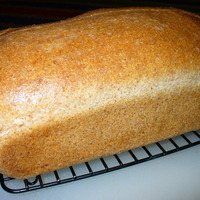
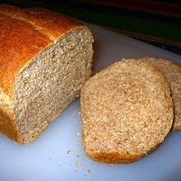

Ezen a weboldalon kenyér receptek vannak ha kenyeret szeretnél sütni
Teljeskiőrlésű kenyér amerikából #001
Hozzávalók:
- 1 1/3 csésze forró víz
- 3 csésze teljes kiőrlésű liszt
- 2 evőkanál száraz tejpor
- 2 evőkanál barna cukor (méz vagy melasz, stb.)
- 2 evőkanál Búzaglutén
- 1 teáskanál só
- 2 evőkanál repceolaj
- 2 teáskanál kenyérsütőgép élesztő
Elkészítés:
- Hagyományos élesztős kenyérkészítési módszerrel, vagy kenyérsütő gép esetén a hozzávalókat a gyártó által felsorolt sorrendben helyezze a edénybe.
- Használja a Teljeskiőrlésű liszt beállítást, és indítsa el, vagy állítsa be a késleltetett időzítést (amíg a tejport és az élesztőt liszt választja el a víztől, nincs probléma a késleltetett indítással.)
- Ha nincs teljes kiőrlésű beállítás a kenyérsütő gépén, próbálja ki a fehér kenyér beállítást közepes méretű cipókhoz.
- A ciklus megszakítása a sütés megkezdése előtt: Ellenőrizze a gép használati útmutatójában a programspecifikációkat, ha benne van, mert ez megmutatja, mennyi idővel a ciklus vége előtt kezdődik a sütés, és akkor leállíthatja a gépet.
Kivesszük a tésztát az edényből, cipót formázunk, kivajazott tepsibe tesszük, lefedjük, és hagyjuk kelni egy ideig (csak kb. 30 percet vesz igénybe, mert a tésztban sok a levegő.)
- 350 F.-on sütjük 25-30 percig.
- Vegyük ki a tepsiből, és szeletelés előtt egy órát pihentessük.
Képek:


Miért ilyen egyszerű ez a weboldal?
Ezek a weboldalak egyszerűen bővíthetők, és szerintem nem zavarják össze az embert.
Nem használ sütiket és nincs benne reklám.